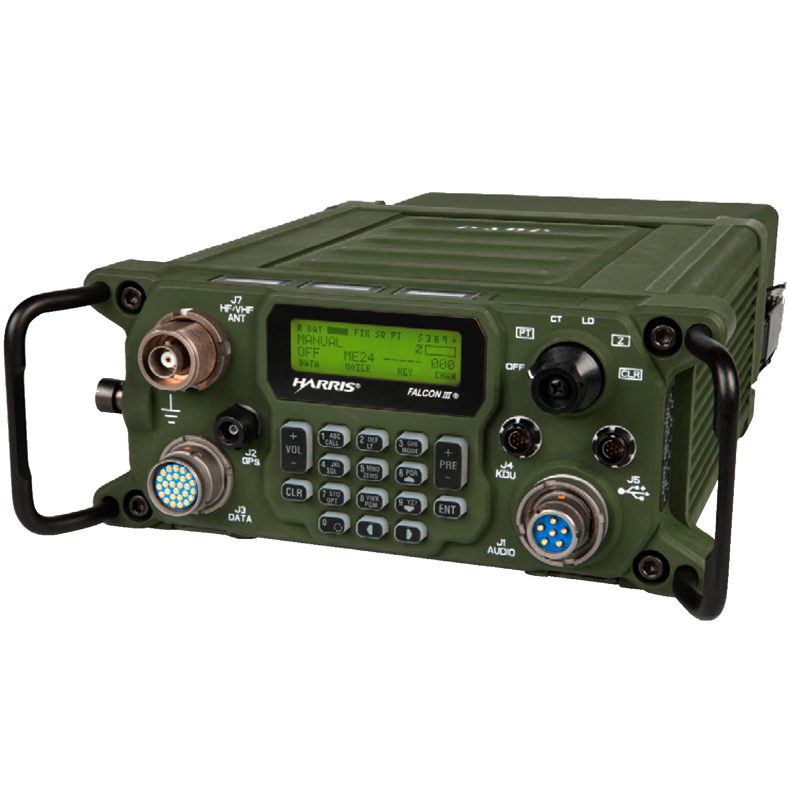
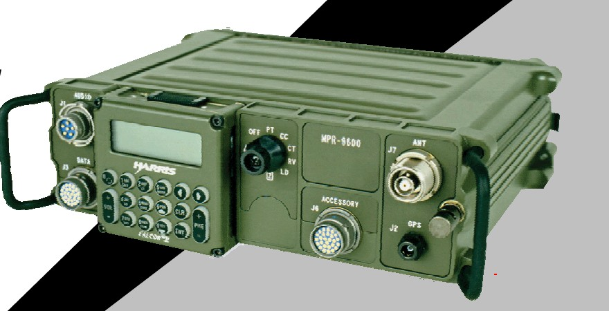

6. ТТХ HARRIS КХ RF-7800H-MP / MPR-9600-MP
Призначення, тактико-технічні характеристики, режими FIX, HOP, ALE, 3G і 3G+, модеми, вокодери, шифрування, органи керування, підготовка до роботи та вбудоване тестування короткохвильових радіостанцій HARRIS Falcon.
Призначення
RF-7800H-MP Falcon III і MPR-9600-MP Falcon II призначені для надійного телефонного зв'язку та передавання даних у радіонапрямку або радіомережі. Радіостанції можуть працювати в переносному, мобільному на автошасі та стаціонарному варіантах.
Обидві моделі належать до сімейства Falcon, підтримують захищений зв'язок і роботу в складних умовах. RF-7800H-MP має ширший діапазон частот і додаткові можливості, яких немає у MPR-9600-MP.


Види модуляції
Модуляція визначає, як голос або інший низькочастотний сигнал змінює радіочастотну несучу. Передавач і приймач повинні використовувати однаковий вид модуляції, інакше мова буде спотворена або взагалі не відновиться.
- USB
- Передавач подавляє несучу та нижню бокову смугу, а в ефір передає тільки верхню бокову смугу з мовною інформацією. Приймач відновлює несучу й перетворює сигнал назад у звук. Такий спосіб економить потужність передавача та займає меншу смугу частот, тому USB є основним варіантом телефонної роботи між однотипними КХ радіостанціями HARRIS.
- LSB
- Працює за тим самим принципом, що й USB, але передається нижня бокова смуга, а верхня та несуча подавляються. На прийманні обов'язково потрібно вибрати LSB. Якщо одна станція працює в USB, а інша в LSB, мова не відтворюватиметься нормально. У навчальному матеріалі LSB пов'язаний переважно з роботою радіоаматорів у КХ діапазоні.
- AME
- Радіостанція передає несучу разом з однією боковою смугою, створюючи сигнал, який може прийняти звичайний AM-приймач. Частина потужності витрачається на несучу, тому режим менш енергоефективний за USB, але забезпечує сумісність із радіостанціями старого парку, які не підтримують односмугову роботу з подавленою несучою.
- CW
- Під час натискання телеграфного ключа радіостанція вмикає несучу, а під час відпускання вимикає її. Послідовності коротких і довгих імпульсів утворюють знаки азбуки Морзе. CW потребує вузької смуги приймання і дає змогу розпізнавати сигнал за слабкого або зашумленого каналу.
- FM
- Голос змінює миттєву частоту несучої, тоді як її амплітуда залишається майже сталою. FM краще протидіє амплітудним шумам, але потребує ширшої смуги, тому застосовується для зв'язку між однотипними станціями в УКХ діапазоні. Режим доступний у RF-7800H-MP і відсутній у MPR-9600-MP.
Не плутати: модуляція визначає спосіб перенесення сигналу радіоканалом; вокодер перетворює мову на цифровий потік; модем перетворює цифрові дані на сигнал, придатний для передавання каналом.
Режими роботи
| Режим | Призначення | Канали та налаштування |
|---|---|---|
| FIX | Робота на фіксованій частоті. Задаються частота, модуляція, потужність, шифрування, вокодер та інші параметри. | 0-199; налаштування з клавіатури або ПЕОМ |
| HOP | Псевдовипадковий перескок робочої частоти для стійкого зв'язку за потужних радіоперешкод. | 19 Hop Sets; налаштування з клавіатури або ПЕОМ |
| ALE | Адаптивний вибір найкращого робочого каналу й автоматичне встановлення зв'язку за MIL-STD-188-141A/B. | 0-99; програмування з ПЕОМ |
| 3G | Третє покоління КХ протоколів за STANAG 4538 з автоматичним керуванням ARCS. | 100-162; програмування з ПЕОМ; у MPR-9600-MP відсутній |
| 3G+ | Одночасний контроль мереж ALE та 3G. | 1-62; у MPR-9600-MP відсутній |
Допустима різниця часу
| Режим | Максимальна різниця часу |
|---|---|
| HOP | 90 с |
| ALE | 30 с |
| 3G | 7 хв |
FIX: робота на фіксованій частоті
У режимі FIX радіостанція працює на заздалегідь налаштованій незмінній частоті. Для каналу задають частоту, вид модуляції, потужність, параметри шифрування, вокодер та інші необхідні налаштування.
HOP: псевдовипадковий перескок частоти
У HOP передавач швидко змінює робочу частоту за заданим алгоритмом, що ускладнює виявлення робочих субчастот і постановку навмисної радіозавади. Синхронізацію виконують вручну або автоматично, а різниця часу між станціями не повинна перевищувати 90 секунд.
Перескок відбувається в смузі навколо центральної частоти з кроком 5 кГц.
ALE
- Сканує набір до 100 частот і вибирає найкращу для зв'язку в поточний момент.
- Аналізує канал за допомогою FSK.
- Перевірка однієї частоти займає близько 12 секунд.
3G за STANAG 4538
3G є розвитком ALE з вищою швидкістю аналізу частот. Замість FSK використовується PSK, швидкість передавання інформації сягає 2400 біт/с, а аналіз однієї частоти займає близько 3 секунд.
- Link Protection захищає від несанкціонованого доступу.
- ARCS автоматизує встановлення зв'язку та вибір каналу.
- 3G і адаптивний широкосмуговий канал до 24 кГц програмуються тільки через CPA.
- Для роботи потрібна синхронізація часу. Її отримують через GPS або вводять вручну.
- Різниця часу між станціями не повинна перевищувати 7 хвилин.
Голосове повідомлення LDV
LDV - голосове повідомлення «останньої надії» для дуже низької якості каналу, коли за SNR приблизно від -3 до 0 дБ звичайний голос може не проходити. LDV передається тільки в режимі 3G.
- ARQ забезпечує передавання повідомлення без помилок.
- Прийняте повідомлення відтворюється одразу та записується для повторного прослуховування.
- У пам'яті зберігається до 10 отриманих повідомлень.
- Параметри LDV зазвичай залишають зі стандартними значеннями.
3G+: одночасна робота з мережами ALE та 3G
Режим 3G+ дає змогу одночасно контролювати мережі ALE та 3G і працювати з кореспондентом за правилами того режиму, в якому він перебуває. 3G+ доступний у RF-7800H-MP і не підтримується MPR-9600-MP.
Потужність передавача
| Рівень | Потужність |
|---|---|
| LOW | 1 Вт |
| MEDIUM | 5 Вт |
| HIGH | 20 Вт |
У КХ діапазоні RF-7800H-MP забезпечує до 20 Вт, а під час роботи в УКХ діапазоні - до 10 Вт.
Модеми
| Модем | Призначення | MPR-9600-MP |
|---|---|---|
| MIL-110B MIL-STD-188-110B | Режими FIX та ALE | Доступний |
| SERIAL | FIX, HOP, ALE у КХ; 2400 біт/с | Доступний |
| ARQ | FIX, HOP, ALE; 2400 біт/с | Доступний |
| WBHF | Широкосмуговий 3G; до 120 кбіт/с | Недоступний |
| WBFSK | Широкосмугова робота тільки в УКХ | Недоступний |
| XDL Фірмове позначення HARRIS | Тільки 3G; 75-9600 біт/с | Недоступний |
RF-7800H-MP передає широкосмугові дані у смузі 3-24 кГц зі швидкістю до 120 кбіт/с.
Вокодери
| Тип | Характеристика | MPR-9600-MP |
|---|---|---|
| CLR | Без вокодера, аналогова телефонія | Доступний |
| CVSD | Цифрова телефонія з дельта-модуляцією для УКХ | Недоступний |
| AVS | Аналогове шифрування мови, скремблювання | Доступний |
| DV24 Digital Voice 2400 | Цифрова телефонія 2400 біт/с; застарілі системи | Доступний |
| DV6 Digital Voice 600 | Цифрова телефонія 600 біт/с; застарілі системи | Доступний |
| ME24 | Цифрова телефонія 2400 біт/с; сучасні системи | Доступний |
| ME12 | Цифрова телефонія 1200 біт/с; сучасні системи | Недоступний |
| ME6 | Цифрова телефонія 600 біт/с; сучасні системи | Доступний |
Порівняння RF-7800H-MP і MPR-9600-MP
Головна відмінність: RF-7800H-MP має ширший діапазон, підтримує 3G/3G+, широкосмугові модеми, додаткові вокодери, AES та Ethernet. MPR-9600-MP зберігає базові КХ-режими, модеми й вокодери Falcon II.
| Можливість | RF-7800H-MP Falcon III | MPR-9600-MP Falcon II |
|---|---|---|
| Діапазон частот | 1,5-59,9999 МГцКХ та частина УКХ | 1,6-29,9999 МГцКХ |
| Режими роботи | FIXHOPALE3G3G+ Додатково: 3G і 3G+ |
FIXHOPALE3G3G+ 3G і 3G+ недоступні |
| Види модуляції | USBLSBAMECWFM Додатково: FM в УКХ |
USBLSBAMECWFM FM недоступна |
| Модеми | MIL-110BSERIALARQWBHFWBFSKXDL Додатково: WBHF, WBFSK, XDL |
MIL-110BSERIALARQWBHFWBFSKXDL WBHF, WBFSK і XDL недоступні |
| Вокодери | CLRAVSDV24DV6CVSDME24ME12ME6 Додатково: CVSD і ME12 |
CLRAVSDV24DV6CVSDME24ME12ME6 CVSD і ME12 недоступні |
| Шифрування | CITADEL-128AES-128/256 Додатково: AES-128/256 |
CITADEL-128AES-128/256 AES-128/256 недоступне |
| Мережі даних | PPPEthernet Додатково: Ethernet |
PPPEthernet Ethernet недоступний |
| Маса без / з АКБ | 3,9 / 4,3 кг | 4,5 / 5,3 кг |
Шифрування, дані, живлення і захищеність
- CITADEL-128 підтримують обидві моделі; AES-128/256 доступне у RF-7800H-MP.
- Вбудований GPS визначає місцеположення та може автоматично передавати координати.
- PPP підтримують обидві моделі; Ethernet доступний у RF-7800H-MP.
- Живлення: акумуляторна BB-2590/U Li-ion 24 В, 7,5 А·год або незаряджувана BA-5390/U Li-MnO2 24 В, 11,2 А·год.
- Робоча напруга: 21,5-32 В, номінально 26 В.
- Температурний діапазон: від -40 до +71 °C.
- Допускається занурення у воду на глибину до 1 м; обладнання розраховане на вібрації наземної тактичної експлуатації.
Основний комплект RF-7800H-MP
- блок радіостанції та акумуляторний блок;
- мікротелефонна гарнітура H-250/U;
- BB-2590/U Li-ion або BA-5390/U Li-MnO2;
- GPS-антена та система заземлення;
- штирьова антена OE-505;
- диполь RF-1940-AT001 та адаптер диполя;
- USB-кабель для програмування і передавання даних;
- програмне забезпечення та зарядна база.
Роз'єми
| Роз'єм | Призначення | Розташування |
|---|---|---|
| J1 AUDIO | Мікротелефонна гарнітура | Передня панель |
| J2 GPS | GPS-антена | Передня панель |
| J3 DATA | Інтерфейс RS-232 | Передня панель |
| J4 KDU | КДП | Передня панель |
| J5 USB | USB-кабель | Передня панель |
| J6 | Заземлення | Передня панель |
| J7 HF/VHF ANT | Антена | Передня панель |
| J9 ACCESSORY | Допоміжне устаткування | Задня панель |
| J10 BATTERY | Акумуляторна батарея | Задня панель |
На задній панелі також розташоване гніздо батарейки HUB для BIOS радіостанції.
Перемикач і клавіатура
Положення перемикача
- OFF
- Радіостанція вимкнена.
- PT
- Відкритий режим.
- CT
- Режим засекреченого зв'язку.
- LD
- Режим технічного обслуговування працівниками HARRIS.
- Z
- Увімкнення в режимі стирання запрограмованих параметрів.
- CLR
- Вимкнення для довготривалого зберігання.
Основні кнопки
- 1 CALL: синхронізація HOP, виклик ALE або синхронізаційний виклик 3G.
- 2 LT: яскравість дисплея.
- 3 MODE: вибір FIX, HOP, ALE або 3G.
- +/- VOL: гучність.
- +/- PRE: вибір запрограмованих каналів.
- 4 SQL: шумоподавлювач.
- 7 OPT: опції меню.
- 8 PGM: програмування.
- CLR: крок назад.
- ENT: підтвердження вводу.
- 0: показ продовження екрана.
- <, >: переміщення курсора меню.
- 6 ^: зміна параметрів.
- 9 v: зміна параметрів.